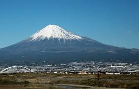

O Japão é um país fascinante localizado no leste da Ásia, conhecido por equilibrar a tradição milenar e o avanço tecnológico.
Com templos históricos, jardins zen e cidades ultramodernas como Tóquio, o Japão oferece uma rica mistura entre cultura,
espiritualidade e inovação. Sua culinária, arquitetura e arte refletem um profundo respeito pela natureza e pela harmonia.
Templo tradicional cercado por cerejeiras em flor.As luzes vibrantes de Tóquio — o Japão moderno em movimento.

O icônico Monte Fuji, símbolo da espiritualidade japonesa.